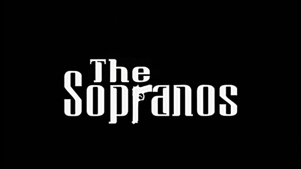
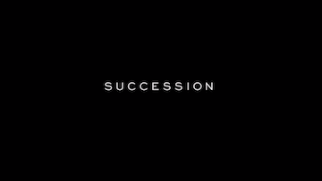
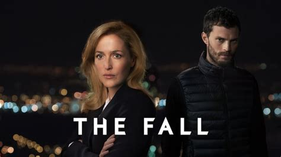

The Sopranos
The Sopranos (no Brasil, Família Soprano e em Portugal, Os Sopranos) foi uma premiada série de televisão dramática americana criada por David Chase e produzida pela HBO.

Sinopse
A série acompanha a vida de Tony Soprano (James Gandolfini), um mafioso ítalo-americano de Nova Jersey que, após uma crise de pânico, procura ajuda profissional.
É a doutora Jennifer Melfi (Lorraine Bracco) quem o ajuda a lidar com os problemas e os chamados negócios da família.
Produção e exibição
Após a encomenda de um episódio piloto em 1997, The Sopranos estreou na HBO, nos Estados Unidos, em 10 de janeiro de 1999. A série foi concluída em 10 de junho de 2007, totalizando seis temporadas e 86 episódios.
Após o término, a série entrou em syndication e foi exibida pelo canal A&E nos Estados Unidos, além de transmissões internacionais.
Produção
A série foi produzida pela HBO, Chase Films e Brad Grey Television. As gravações ocorreram principalmente no Silvercup Studios, em Nova Iorque, e em locações no estado de Nova Jersey.
Produtores executivos
- David Chase
- Brad Grey
- Robin Green
- Mitchell Burgess
- Ilene S. Landress
- Terence Winter
- Matthew Weiner
Recepção e legado
The Sopranos é considerada por muitos críticos como uma das melhores séries de televisão de todos os tempos.
A produção teve grande impacto na cultura popular dos Estados Unidos nos anos 2000, sendo alvo de análises críticas, polêmicas e paródias.
A série também gerou produtos derivados, incluindo livros, jogo eletrônico, trilhas sonoras e merchandising.
Após o fim da série, vários membros do elenco e da equipe alcançaram maior reconhecimento e desenvolveram carreiras bem-sucedidas.
Prêmios e reconhecimento
- Prêmio Peabody
- 21 Emmy Awards
- 5 Golden Globe Awards
Em 2013, o Writers Guild of America classificou a série como a mais bem escrita. O jornal The Guardian a considerou uma das melhores do século XXI, assim como TV Guide e Rolling Stone.
Exibição internacional
Portugal
Estreou na RTP2 em 2001 com áudio original e legendas, sendo posteriormente exibida no FOX Crime.
Brasil
Foi exibida pela HBO entre 1999 e 2007, além de transmissões em TV aberta pelo SBT e Band.
Voltar ao conteúdo principalSuccession
Sinopse
Succession é uma série de televisão de comédia dramática norte-americana criada por Jesse Armstrong e transmitida originalmente pela HBO.

A história acompanha a família Roy, proprietária de um conglomerado global de mídia. Apesar de rica e poderosa, a família é marcada por conflitos internos e relações disfuncionais.
A série explora temas como lealdade familiar, negócios internacionais e os efeitos do poder no século XXI.
Entre os principais personagens estão Logan Roy, o patriarca da família; Kendall Roy, herdeiro aparente; Roman Roy, filho irreverente; e Shiv Roy, que segue carreira na política.
Produção e exibição
A série estreou em 3 de junho de 2018. Em fevereiro de 2023, Jesse Armstrong anunciou que a quarta temporada seria a última, optando por encerrar a história de forma concisa.
A quarta e última temporada estreou em 26 de março de 2023, sendo exibida simultaneamente na HBO e na plataforma HBO Max.
Elenco
O elenco inclui Hiam Abbass, Nicholas Braun, Brian Cox, Kieran Culkin, Matthew Macfadyen, Sarah Snook e Jeremy Strong, entre outros.
Episódios
| Temporada | Episódios | Estreia da temporada | Final da temporada |
|---|---|---|---|
| 1 | 10 | 3 de junho de 2018 | 5 de agosto de 2018 |
| 2 | 10 | 11 de agosto de 2019 | 13 de outubro de 2019 |
| 3 | 9 | 17 de outubro de 2021 | 12 de dezembro de 2021 |
| 4 | 10 | 26 de março de 2023 | 28 de maio de 2023 |
Recepção crítica e prêmios
Primeira temporada
No agregador de avaliações Rotten Tomatoes, a primeira temporada conta com aprovação de 87% e média de 7,83/10 com base em 76 críticas.
No Metacritic, a temporada possui nota de 70 de 100 com base em 29 críticas, indicando “análises geralmente favoráveis”.
Segunda temporada
A segunda temporada recebeu aclamação crítica.
No Rotten Tomatoes, conta com aprovação de 100% e média de 9,14/10 com base em 38 críticas.
No Metacritic, possui nota de 88 de 100 com base em 13 críticas, indicando “aclamação universal”.
Prêmios
A série conquistou 19 prêmios Emmy, incluindo:
- Melhor Série Dramática (3 vezes)
- Melhor Ator em Série Dramática — Jeremy Strong e Kieran Culkin
- Melhor Atriz em Série Dramática — Sarah Snook
- Melhor Ator Coadjuvante — Matthew Macfadyen (2 vezes)
The Fall
The Fall é uma série de televisão de drama anglo-irlandesa criada por Allan Cubitt e dirigida por Jakob Verbruggen. A produção foi exibida no Reino Unido pela BBC Two, na Irlanda pela RTÉ One e no Brasil pelo canal +Globosat.

Sinopse
A série acompanha a detetive Stella Gibson (Gillian Anderson), enviada a Belfast para investigar uma série de assassinatos em série.
O principal suspeito é Paul Spector (Jamie Dornan), um pai de família aparentemente comum que leva uma vida dupla como assassino em série.
A narrativa alterna entre a investigação policial e a rotina do criminoso, revelando aos poucos a tensão entre caçador e presa.
Produção e exibição
The Fall foi produzida pela Artists Studio e filmada principalmente em Belfast, Irlanda do Norte. A série estreou em 13 de maio de 2013 e teve três temporadas.
A produção foi reconhecida pelo seu estilo psicológico e pela abordagem intimista tanto da investigação quanto do ponto de vista do assassino.
Elenco principal
- Gillian Anderson como Stella Gibson
- Jamie Dornan como Paul Spector
- Aisling Franciosi como Katie Benedetto
- Valene Kane como Rose Stagg
- John Lynch como Jim Burns
- Bronagh Waugh como Sally Ann Spector
- Colin Morgan como DS Tom Anderson
- Archie Panjabi como Reed Smith
Episódios (Temporada 1)
| Nº | Episódio | Exibição | Audiência (milhões) |
|---|---|---|---|
| 1 | "Dark Descent" | 13.05.2013 | 3.53 |
| 2 | "Darkness Visible" | 20.05.2013 | 3.38 |
| 3 | "Insolence & Wine" | 27.05.2013 | 2.87 |
| 4 | "My Adventurous Song" | 03.06.2013 | 3.24 |
| 5 | "The Vast Abyss" | 10.06.2013 | 3.59 |
Prêmios e indicações
The Fall foi indicada a diversas premiações, incluindo os BAFTA Awards, Edgar Allan Poe Awards e National Television Awards.
A série recebeu reconhecimento por suas atuações, especialmente de Gillian Anderson e Jamie Dornan. Dornan venceu prêmios como o Irish Film and Television Award e o Broadcasting Press Guild Award.
A produção também foi premiada em categorias técnicas e de atuação em diferentes cerimônias irlandesas e internacionais.
Voltar ao conteúdo principal